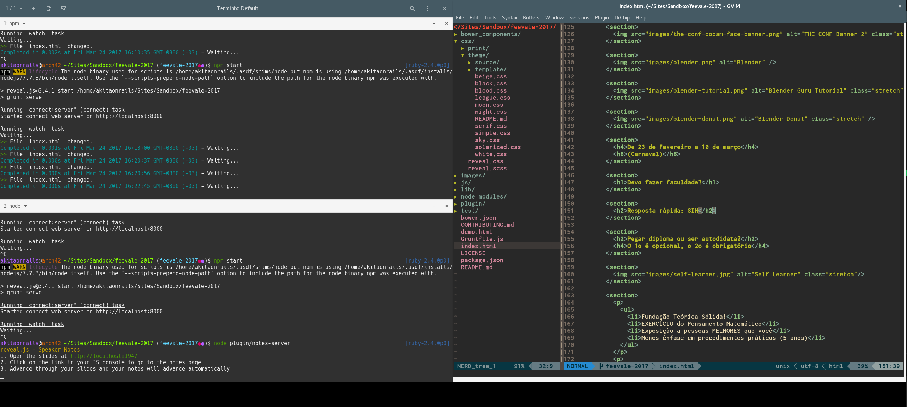

Uma Discussão sobre a Carreira em TI
Meetup Vale dos Desenvolvedores - 4a edição
por Fabio Akita - Codeminer 42
Quem sou?
- co-fundador Codeminer 42
- organizador 9 Rubyconf Brasil
- 200+ palestras, Brasil e fora
- AkitaOnRails.com
- Por onde começar?
- Devo fazer faculdade?
- Que tecnologias devo me especializar?
- Que posições devo almejar?
- Qual a remuneração?
Por onde começar?
- você gosta de fazer mods?
- você gosta de customizar seu computador?
- você gosta de ficar editando vídeo?
- você gosta de escrever artigos?
Profissão de PRÁTICA!
Comece ganhando gosto em PRATICAR!
23 de Fevereiro a 10 de março
(Carnaval)

Devo fazer faculdade?
Resposta rápida: SIM
Pegar diploma ou ser autodidata?
O 1o é opcional, o 2o é obrigatório
- Fundação Teórica Sólida!
- EXERCÍCIO do Pensamento Matemático
- Exposição a pessoas MELHORES que você
- Menos ênfase em procedimentos práticos (5 anos)
Sim, é possível aprender tudo sozinho. Poucos conseguem.
Arrume um ESTÁGIO o quanto antes
O pagamento não é importante. Trabalhe de graça se puder.
- Lógica!
- Comunicação
- Argumentação e Falácias
Não siga ídolos. Acumule referências.
Quais tecnologias devo me especializar?

Conhece a lei de "Oferta x Procura"?
Quanto mais de qualquer coisa,
menor o valor
Não tenha "ídolos"!
Seja "promíscuo"
- 1989 - 1990 - Basic
- 1990 - 1996 - Clipper, dBase, Pascal
- 1996 - 1999 - Delphi, Visual Basic
- 1998 - 2003 - ASP, PHP, SQL, ActionScript, Python
- 2002 - 2006 - SAP, Java, .NET
- 2010 - 2012 - Objective C
- 2006 - 2017 - Ruby
- 2015 - 2017 - Elixir, Crystal